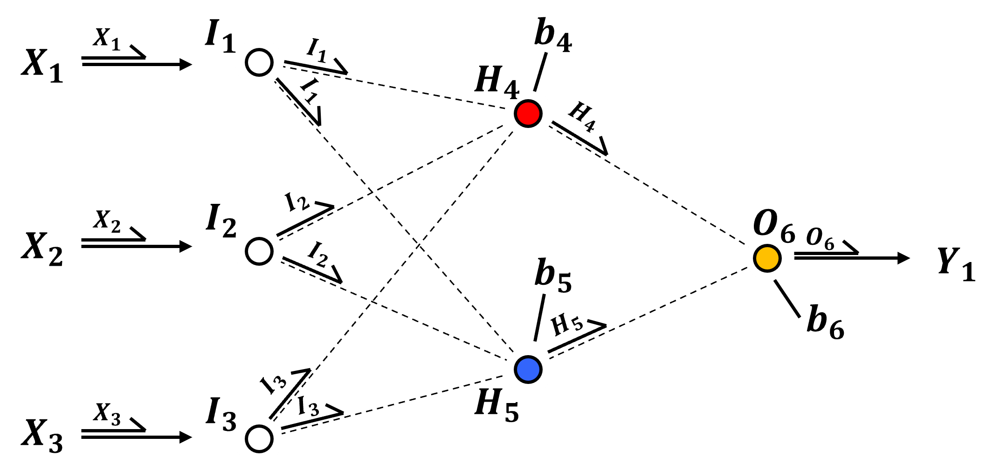
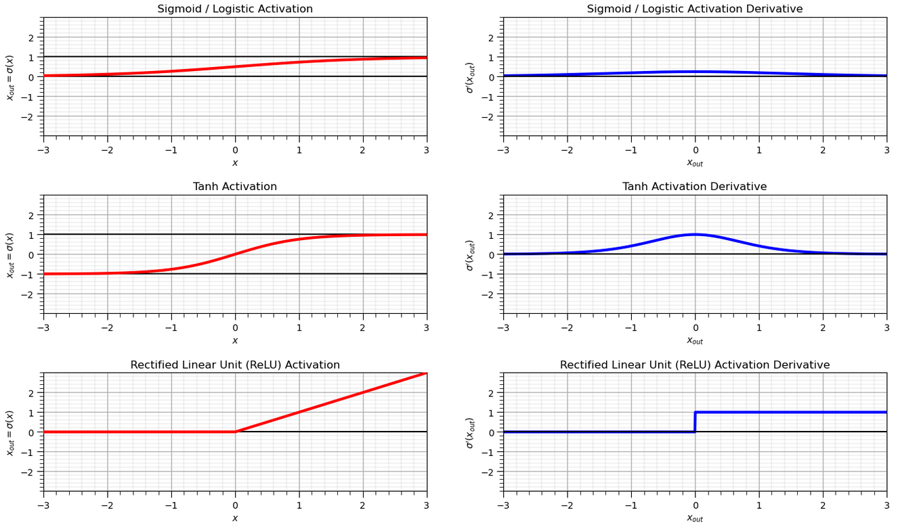
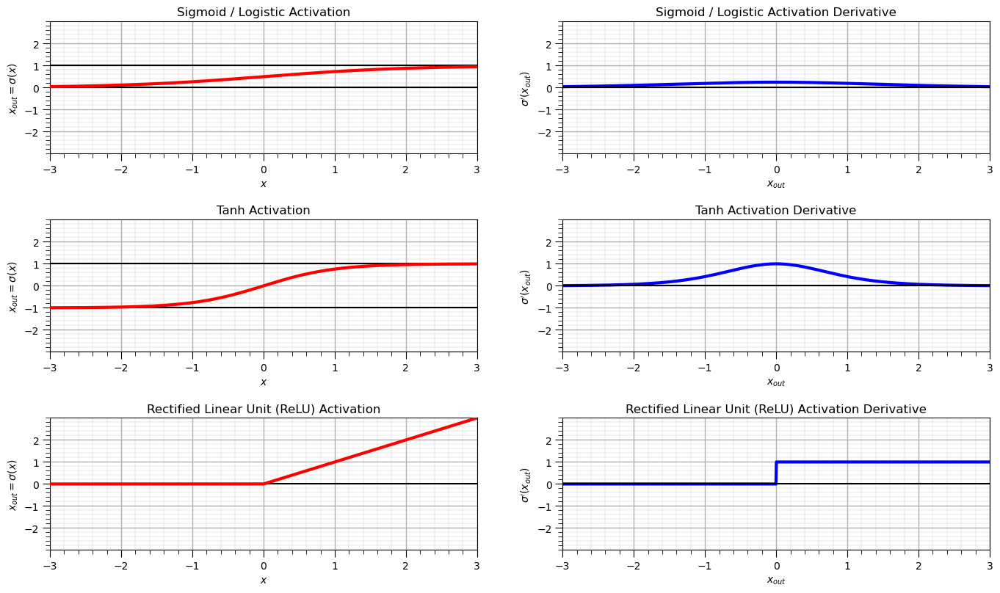
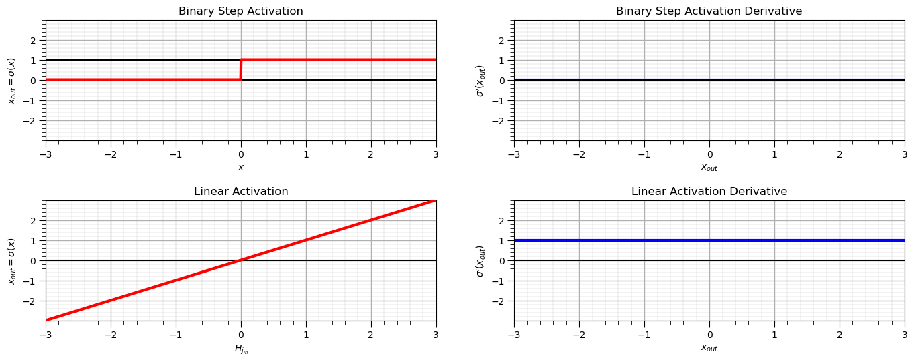

Neural Network Activation Functions#
Michael J. Pyrcz, Professor, The University of Texas at Austin
Twitter | GitHub | Website | GoogleScholar | Geostatistics Book | YouTube | Applied Geostats in Python e-book | Applied Machine Learning in Python e-book | LinkedIn
Chapter of e-book “Applied Machine Learning in Python: a Hands-on Guide with Code”.
Cite this e-Book as:
Pyrcz, M.J., 2024, Applied Machine Learning in Python: A Hands-on Guide with Code [e-book]. Zenodo. doi:10.5281/zenodo.15169138 
The workflows in this book and more are available here:
Cite the MachineLearningDemos GitHub Repository as:
Pyrcz, M.J., 2024, MachineLearningDemos: Python Machine Learning Demonstration Workflows Repository (0.0.3) [Software]. Zenodo. DOI: 10.5281/zenodo.13835312. GitHub repository: GeostatsGuy/MachineLearningDemos 
By Michael J. Pyrcz
© Copyright 2024.
This chapter is a tutorial for / demonstration of Neural Networks Activation Functions.
YouTube Lecture: check out my lectures on:
These lectures are all part of my Machine Learning Course on YouTube with linked well-documented Python workflows and interactive dashboards. My goal is to share accessible, actionable, and repeatable educational content. If you want to know about my motivation, check out Michael’s Story.
Motivation#
Activation functions are a critical component of any neural network.
we apply activation functions and their associated derivatives throughout the deep learning chapters
So let’s visualize the common activation functions and their derrivatives.
Activation Functions#
In neural networks, an activation function is a transformation of the linear combination of the weighted node inputs plus the node bias term applied in a network node. In general activation is nonlinear to,
introduce non-linear properties to the network
prevent the network from collapsing
Without the nonlinear activation function we would have linear regression, i.e., the entire system collapses to a linear combination of the inputs!
Do demonstrate this, let’s take our example network and remove the activation functions, or assuming a linear transformation,

Now we can calculate the prediction ignoring activation, since it is identity or a linear scaling as,
Now we can group the like terms,
and finally, we can group the summed model parameters and replace them with recognizable coefficients,
et voilà! We have linear regression, an artificial neural network without activation collapses to linear regression.
Now that we have demonstrated the necessity of nonlinear activation, here’s some common activation functions,

Note the notation in the figure above,
for the activation functions, the x-axis is the pre-activation value, \(x_{in}\), and the y-axis is the post-activation values, \(x_{out}\).
for the activation function derivatives, the x-axis is the post-activation value, \(x_{out}\), and the y-axis is the associated activation function derrivative.
The derivative is defined and derived like this to simplify the back propagation process, i.e., use the output from a neural network node to back-propagate through the node!
Let’s list, define some activation functions, here are the equations and some comments for each,
Sigmoid - also known as logistic has the following expression and derivative.
\(\quad\) Note, very efficient derivative, but not zero-centered, which can slow down training due to zigzagging gradients, and suffers from vanishing gradients when input values are far from 0 (saturates near 0 or 1).
Tanh – hyperbolic tangent has the following expression and derivative.
\(\quad\) Note, Tanh suffers from vanishing gradients for large input values, like sigmoid activation, but generally performs better than sigmoid in practice due to its centered output.
ReLU – rectified linear units has the following expression and derivative.
\(\quad\) Note, ReLU encourages sparse activation, i.e., only some neurons are on, but can suffer from the dying ReLU problem if too many activations are 0.0.
Linear – linear activation simply returns the input
\(\quad\) Note, linear activation is only used in output layers for regression, it does not help capture non-linear patterns and if only linear activation is applied the network collapses to linear regression.
Binary Step – outputs 0 or 1 depending on input sign
\(\quad\) Note, binary step is non-differentiable and not suitable for gradient descent, but was historically used in perceptrons.
Selecting an Activation Function#
How do we select our activation functions? Considerations these criteria for selecting activation functions,
Nonlinear – required to impose nonlinearity into the prediction model (e.g., sigmoid, tanh and ReLU are nonlinear).
Range – finite for more stability gradient-based learning, infinite for more efficient training, but requires a slower learning rate (e.g., sigmoid \([0,\infty]\), tanh \([-1,1]\) and ReLU \([0,\infty]\)).
Continuously Differentiable – required for stable gradient-based optimization (e.g., sigmoid, tanh and ReLU \(\ne 0.0\))
Fast Calculation of Derivative - the derivative calculation has low calculation complexity for efficient training (e.g., sigmoid and ReLU)
Smooth functions with Monotonic Derivative – may generalize better (e.g., sigmoid, tanh and ReLU)
Monotonic – guaranteed convexity of error surface of a single layer model, global minimum for loss function (e.g., sigmoid, tanh and ReLU)
Approximates Identity at the Origin, \((𝑓(0) = 0)\) – learns efficiently with the weights initialized as small random values (e.g., ReLU and tanh)
Here’s a table summarizing these criteria for the discussed activation functions,
Property |
Sigmoid |
Tanh |
ReLU |
Linear |
Binary Step |
|---|---|---|---|---|---|
Nonlinear |
✅ |
✅ |
✅ |
❌ |
✅ |
Range |
(0, 1) |
(–1, 1) |
[0, ∞) |
(–∞, ∞) |
{0, 1} |
Continuously Differentiable |
✅ |
✅ |
❌ (not at 0) |
✅ |
❌ (discontinuous) |
Fast Derivative Calculation |
✅ |
⚠️ (slower) |
✅ |
✅ |
✅ (discrete case) |
Smooth with Monotonic Derivative |
✅ |
✅ |
⚠️ (not smooth) |
✅ |
❌ |
Monotonic Function |
✅ |
✅ |
✅ |
✅ |
✅ |
Approximates Identity at Origin |
✅ (≈0.5 slope) |
✅ (slope ≈ 1) |
✅ (slope = 1) |
✅ |
❌ |
Below we will visualize the activation functions and their associated derivatives.
Import Required Packages#
We will also need some standard packages. These should have been installed with Anaconda 3.
import numpy as np
import pandas as pd
import matplotlib.pyplot as plt
from matplotlib.ticker import (MultipleLocator, AutoMinorLocator, AutoLocator) # control of axes ticks
plt.rc('axes', axisbelow=True) # set axes and grids in the background for all plots
If you get a package import error, you may have to first install some of these packages. This can usually be accomplished by opening up a command window on Windows and then typing ‘python -m pip install [package-name]’. More assistance is available with the respective package docs.
Declare Functions#
I just added a convenience function for adding major and minor gridlines.
def add_grid():
plt.gca().grid(True, which='major',linewidth = 1.0); plt.gca().grid(True, which='minor',linewidth = 0.2) # add y grids
plt.gca().tick_params(which='major',length=7); plt.gca().tick_params(which='minor', length=4)
plt.gca().xaxis.set_minor_locator(AutoMinorLocator()); plt.gca().yaxis.set_minor_locator(AutoMinorLocator()) # turn on minor ticks
Activation Functions#
The following calculations and plots provide the functions and derivatives for the following activation functions:
Sigmoid / Logistic
Tanh
ReLU
x = np.linspace(-3,3,1000)
y_sigmoid = 1.0/(1.0+np.exp(-1*x))
dy_sigmoid = y_sigmoid*(1.0-y_sigmoid)
y_tanh = (np.exp(x) - np.exp(-1*x))/(np.exp(x) + np.exp(-1*x))
dy_tanh = 1 - (np.exp(x) - np.exp(-1*x))**2.0/(np.exp(x) + np.exp(-1*x))**2.0
y_relu = np.clip(x, a_min = 0,a_max = None)
dy_relu = np.where(y_relu == 0,0,1.0)
major_ticks = np.array([-2,-1,0,1,2])
plt.subplot(321)
plt.plot(x,y_sigmoid,color='red',lw=3,label=r'$\alpha(x)$',zorder=10)
plt.gca().set_yticks(major_ticks); plt.title('Sigmoid / Logistic Activation'); plt.xlabel(r'$x$'); plt.ylabel(r'$x_{out} = \sigma(x)$')
plt.plot([-3,3],[0,0],color='black',zorder=1); plt.plot([-3,3],[1,1],color='black',zorder=1)
add_grid(); plt.xlim([-3,3]); plt.ylim([-3,3])
plt.subplot(322)
plt.plot(x,dy_sigmoid,color='blue',lw=3,label=r'$\frac{\partial \alpha}{\partial x}(x)$',zorder=1)
plt.gca().set_yticks(major_ticks); plt.title('Sigmoid / Logistic Activation Derivative')
plt.xlabel(r'$x_{out}$'); plt.ylabel(r'$\sigma^{\prime} \left(x_{out} \right)$')
plt.plot([-3,3],[0,0],color='black',zorder=1)
add_grid(); plt.xlim([-3,3]); plt.ylim([-3,3])
plt.subplot(323)
plt.plot(x,y_tanh,color='red',lw=3,label=r'$\alpha(x)$',zorder=10)
plt.gca().set_yticks(major_ticks); plt.title('Tanh Activation'); plt.xlabel(r'$x$'); plt.ylabel(r'$x_{out} = \sigma(x)$')
plt.plot([-3,3],[-1,-1],color='black',zorder=1); plt.plot([-3,3],[1,1],color='black',zorder=1)
add_grid(); plt.xlim([-3,3]); plt.ylim([-3,3])
plt.subplot(324)
plt.plot(x,dy_tanh,color='blue',lw=3,label=r'$\frac{\partial \alpha}{\partial x_{out}}(x_{out})$',zorder=1)
plt.gca().set_yticks(major_ticks); plt.title('Tanh Activation Derivative'); plt.xlabel(r'$x_{out}$')
plt.ylabel(r'$\sigma^{\prime} \left(x_{out} \right)$')
plt.plot([-3,3],[0,0],color='black',zorder=1)
add_grid(); plt.xlim([-3,3]); plt.ylim([-3,3])
plt.subplot(325)
plt.plot(x,y_relu,color='red',lw=3,label=r'$\alpha(x)$',zorder=10); plt.xlabel(r'$x$'); plt.ylabel(r'$x_{out} = \sigma(x)$')
plt.gca().set_yticks(major_ticks); plt.title('Rectified Linear Unit (ReLU) Activation')
plt.plot([-3,3],[0,0],color='black',zorder=1)
add_grid(); plt.xlim([-3,3]); plt.ylim([-3,3])
plt.subplot(326)
plt.plot(x,dy_relu,color='blue',lw=3,label=r'$\frac{\partial \alpha}{\partial x_{out}}(x_{out})$',zorder=1)
plt.gca().set_yticks(major_ticks); plt.title('Rectified Linear Unit (ReLU) Activation Derivative'); plt.xlabel(r'$x_{out}$')
plt.ylabel(r'$\sigma^{\prime} \left(x_{out} \right)$')
plt.plot([-3,3],[0,0],color='black',zorder=1)
add_grid(); plt.xlim([-3,3]); plt.ylim([-3,3])
plt.subplots_adjust(left=0.0, bottom=0.0, right=2.0, top=1.5, wspace=0.2, hspace=0.5); plt.show()

Other Loss Functions#
The following calculations and plots provide the functions and derivatives for the following activation functions:
Binary Step
x = np.linspace(-3,3,1000)
y_binary = np.where(x <= 0,0.0,1.0)
dy_binary = np.zeros((len(y_binary)))
y_linear = np.copy(x)
dy_linear = np.ones((len(y_binary)))
major_ticks = np.array([-2,-1,0,1,2])
plt.subplot(321)
plt.plot(x,y_binary,color='red',lw=3,label=r'$\alpha(x)$',zorder=10)
plt.gca().set_yticks(major_ticks); plt.title('Binary Step Activation'); plt.xlabel(r'$x$'); plt.ylabel(r'$x_{out} = \sigma(x)$')
plt.plot([-3,3],[0,0],color='black',zorder=1); plt.plot([-3,3],[1,1],color='black',zorder=1)
add_grid(); plt.xlim([-3,3]); plt.ylim([-3,3])
plt.subplot(322)
plt.plot(x,dy_binary,color='blue',lw=3,label=r'$\frac{\partial \alpha}{\partial x_{out}}(x_{out})$',zorder=1)
plt.gca().set_yticks(major_ticks); plt.title('Binary Step Activation Derivative'); plt.xlabel(r'$x_{out}$')
plt.ylabel(r'$\sigma^{\prime} \left(x_{out} \right)$')
plt.plot([-3,3],[0,0],color='black',zorder=1)
add_grid(); plt.xlim([-3,3]); plt.ylim([-3,3])
plt.subplot(323)
plt.plot(x,y_linear,color='red',lw=3,label=r'$\alpha(x)$',zorder=10)
plt.gca().set_yticks(major_ticks); plt.title('Linear Activation'); plt.xlabel(r'$H_{j_{in}}$'); plt.ylabel(r'$x_{out} = \sigma(x)$')
plt.plot([-3,3],[0,0],color='black',zorder=1)
add_grid(); plt.xlim([-3,3]); plt.ylim([-3,3])
plt.subplot(324)
plt.plot(x,dy_linear,color='blue',lw=3,label=r'$\frac{\partial \alpha}{\partial x_{out}}(x_{out})$',zorder=1)
plt.gca().set_yticks(major_ticks); plt.title('Linear Activation Derivative'); plt.xlabel(r'$x_{out}$')
plt.ylabel(r'$\sigma^{\prime} \left(x_{out} \right)$')
plt.plot([-3,3],[0,0],color='black',zorder=1)
add_grid(); plt.xlim([-3,3]); plt.ylim([-3,3])
plt.subplots_adjust(left=0.0, bottom=0.0, right=2.0, top=1.5, wspace=0.2, hspace=0.5); plt.show()

About the Author#

Michael Pyrcz is a professor in the Cockrell School of Engineering, and the Jackson School of Geosciences, at The University of Texas at Austin, where he researches and teaches subsurface, spatial data analytics, geostatistics, and machine learning. Michael is also,
the principal investigator of the Energy Analytics freshmen research initiative and a core faculty in the Machine Learn Laboratory in the College of Natural Sciences, The University of Texas at Austin
an associate editor for Computers and Geosciences, and a board member for Mathematical Geosciences, the International Association for Mathematical Geosciences.
Michael has written over 70 peer-reviewed publications, a Python package for spatial data analytics, co-authored a textbook on spatial data analytics, Geostatistical Reservoir Modeling and author of two recently released e-books, Applied Geostatistics in Python: a Hands-on Guide with GeostatsPy and Applied Machine Learning in Python: a Hands-on Guide with Code.
All of Michael’s university lectures are available on his YouTube Channel with links to 100s of Python interactive dashboards and well-documented workflows in over 40 repositories on his GitHub account, to support any interested students and working professionals with evergreen content. To find out more about Michael’s work and shared educational resources visit his Website.
Want to Work Together?#
I hope this content is helpful to those that want to learn more about subsurface modeling, data analytics and machine learning. Students and working professionals are welcome to participate.
Want to invite me to visit your company for training, mentoring, project review, workflow design and / or consulting? I’d be happy to drop by and work with you!
Interested in partnering, supporting my graduate student research or my Subsurface Data Analytics and Machine Learning consortium (co-PI is Professor John Foster)? My research combines data analytics, stochastic modeling and machine learning theory with practice to develop novel methods and workflows to add value. We are solving challenging subsurface problems!
I can be reached at mpyrcz@austin.utexas.edu.
I’m always happy to discuss,
Michael
Michael Pyrcz, Ph.D., P.Eng. Professor, Cockrell School of Engineering and The Jackson School of Geosciences, The University of Texas at Austin
More Resources Available at: Twitter | GitHub | Website | GoogleScholar | Geostatistics Book | YouTube | Applied Geostats in Python e-book | Applied Machine Learning in Python e-book | LinkedIn
Comments#
This was a basic treatment of activation functions for neural networks. Much more could be done and discussed, I have many more resources. Check out my shared resource inventory and the YouTube lecture links at the start of this chapter with resource links in the videos’ descriptions.
I hope this is helpful,
Michael